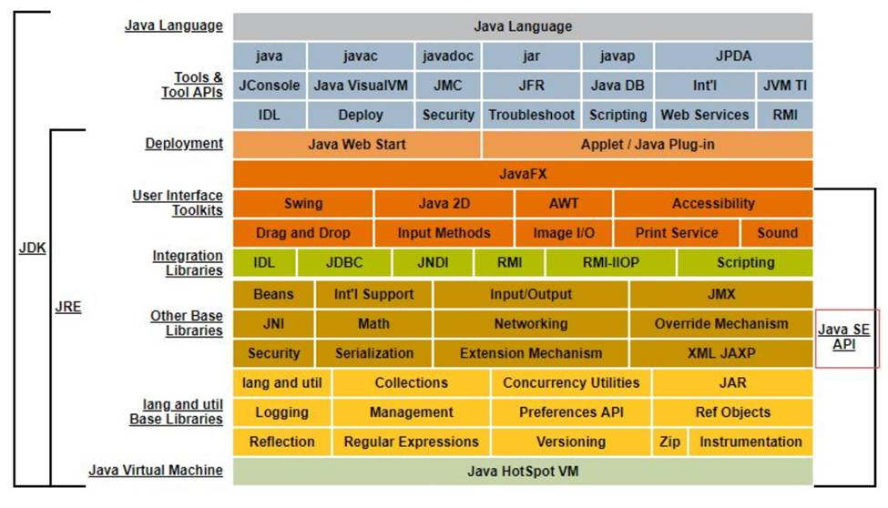
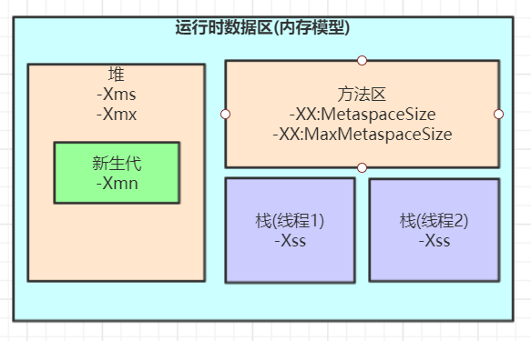
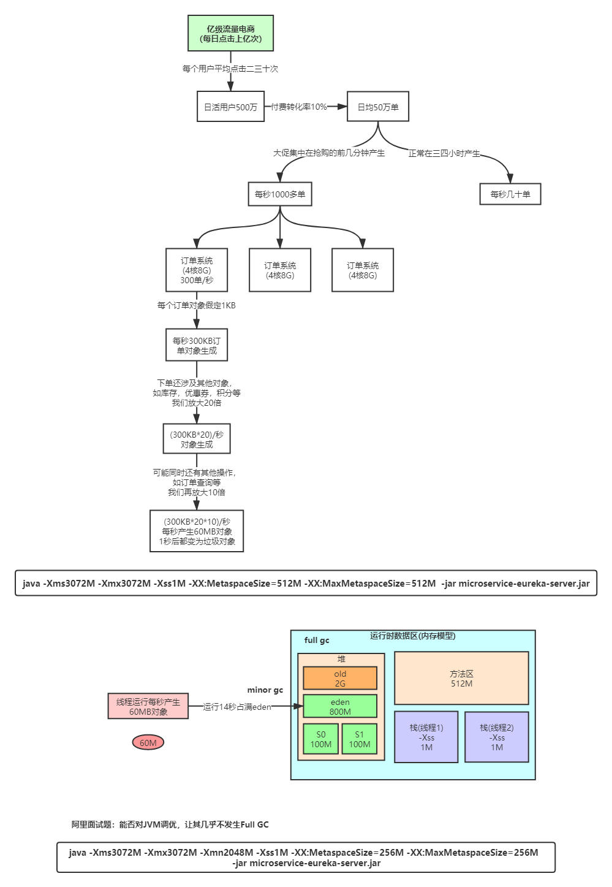

1.2 JVM整体结构
1.2.1 JDK体系结构

1.2.2 Java语言的跨平台特性

1.2.3 JVM整体结构及内存模型

1.2.4 JVM内存参数设置

Spring Boot程序的JVM参数设置格式(Tomcat启动直接加在bin目录下catalina.sh文件里)：
java -Xms2048M -Xmx2048M -Xmn1024M -Xss512K -XX:MetaspaceSize=256M -XX:MaxMetaspaceSize=256M -jar eureka-server.jar
-Xss：每个线程的栈大小
-Xms：初始堆大小，默认物理内存的1/64
-Xmx：最大堆大小，默认物理内存的1/4
-Xmn：新生代大小
-XX:NewSize：设置新生代初始大小
-XX:NewRatio：默认2表示新生代占年老代的1/2，占整个堆内存的1/3。
-XX:SurvivorRatio：默认8表示一个survivor区占用1/8的Eden内存，即1/10的新生代内存。
关于元空间的JVM参数有两个：-XX:MetaspaceSize=N和 -XX:MaxMetaspaceSize=N
-XX：MaxMetaspaceSize：设置元空间最大值， 默认是-1， 即不限制， 或者说只受限于本地内存大小。
-XX：MetaspaceSize：指定元空间触发Fullgc的初始阈值(元空间无固定初始大小)， 以字节为单位，默认是21M，达到该值就会触发full gc进行类型卸载， 同时收集器会对该值进行调整： 如果释放了大量的空间， 就适当降低该值； 如果释放了很少的空间， 那么在不超过-XX：MaxMetaspaceSize（如果设置了的话） 的情况下， 适当提高该值。这个跟早期jdk版本的-XX:PermSize参数意思不一样，-XX:PermSize代表永久代的初始容量。
由于调整元空间的大小需要Full GC，这是非常昂贵的操作，如果应用在启动的时候发生大量Full GC，通常都是由于永久代或元空间发生了大小调整，基于这种情况，一般建议在JVM参数中将MetaspaceSize和MaxMetaspaceSize设置成一样的值，并设置得比初始值要大，对于8G物理内存的机器来说，一般我会将这两个值都设置为256M。
StackOverflowError示例：
// JVM设置 -Xss128k(默认1M)
public class StackOverflowTest {
static int count = 0;
static void redo() {
count++;
redo();
}
public static void main(String[] args) {
try {
redo();
} catch (Throwable t) {
t.printStackTrace();
System.out.println(count);
}
}
}
运行结果：
java.lang.StackOverflowError
at com.tuling.jvm.StackOverflowTest.redo(StackOverflowTest.java:12)
at com.tuling.jvm.StackOverflowTest.redo(StackOverflowTest.java:13)
at com.tuling.jvm.StackOverflowTest.redo(StackOverflowTest.java:13)
......
结论：-Xss设置越小，count值越小，说明一个线程栈里能分配的栈帧就越少，但是对JVM整体来说能开启的线程数会更多。
JVM参数设置示例

每秒产生60MB对象，14秒后占满eden，此时触发minor gc，并进行STW，此时前13秒的垃圾对象被回收，第14秒的60MB对象无法回收，会从eden中移除，但是根据 对象动态年龄判断 机制，这60MB对象超过S0剩余空间（100MB）的一半，所以这60MB对象将被移入old。接下来每14秒就会有60MB对象进入old，8分钟左右old被填满后就会触发full GC。
这样的full GC频率过高，所以考虑设置 -Xmn2048M，将年轻代堆内存设置为2G，这样eden约为1600M，S0和S1约为200M，按照上面的流程，触发minor gc时，第14秒的60MB对象不超过S0剩余空间（200M）的一半，将被放入S0，而不是old，接下来可以循环利用年轻代堆内存，从而实现垃圾对象基本在年轻代里进行回收。
结论：尽可能让对象都在新生代里分配和回收，尽量别让太多对象频繁进入老年代，避免频繁对老年代进行垃圾回收，同时给系统充足的内存大小，避免新生代频繁的进行垃圾回收。